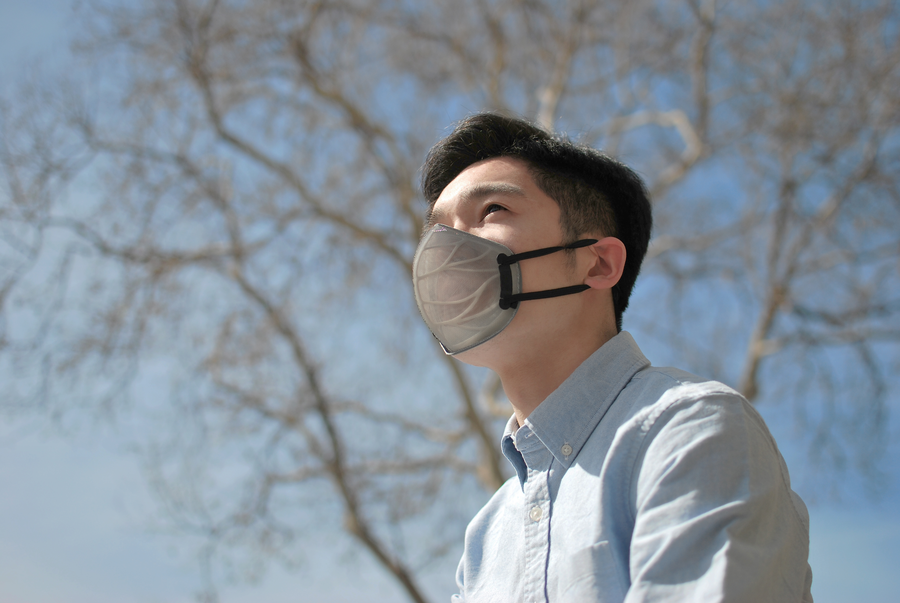
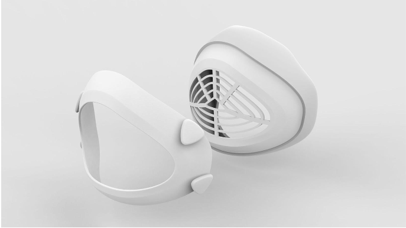
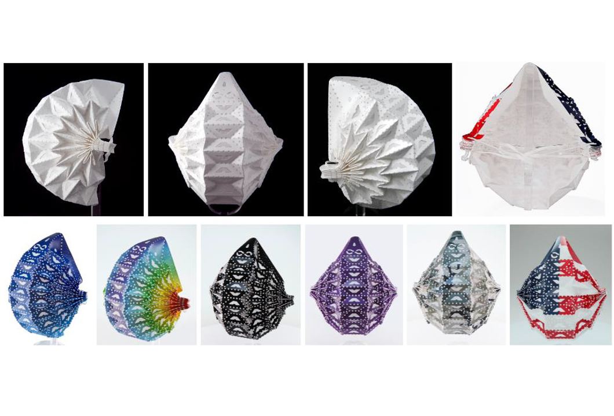
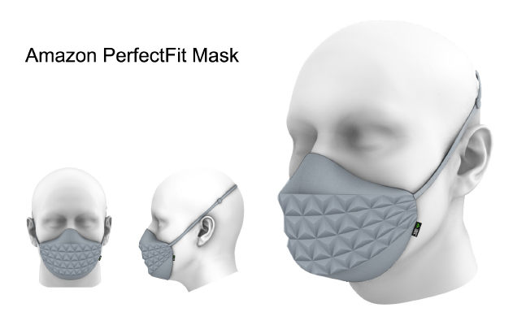
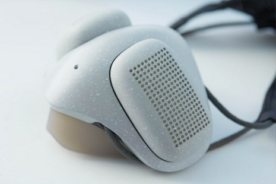
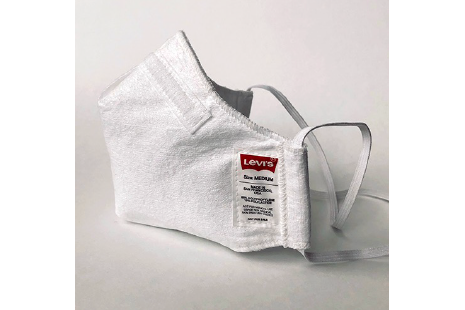
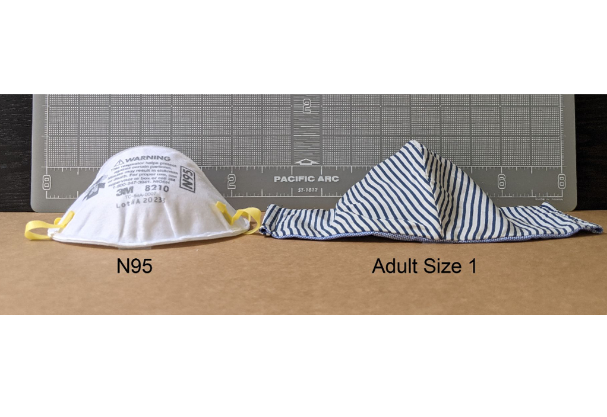
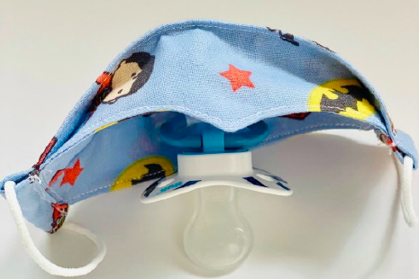
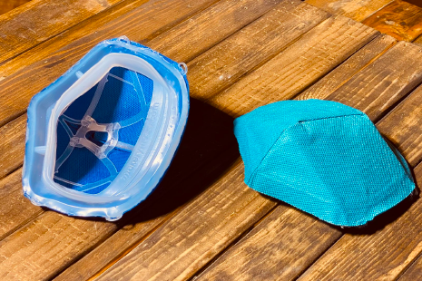

Overview
Masks (also referred to as “barrier face coverings”) are products worn on the face that provide varying degrees of protection to the wearer and have the potential to filter respiratory secretions from the wearer to help prevent disease transmission to others (i.e., they may provide source control). Many public health agencies worldwide are encouraging their citizens to wear masks when in public spaces in order to reduce the spread of infectious respiratory diseases. However, there remain notable barriers that reduce overall mask usage. These barriers include issues such as contact dermatitis with prolonged wear, physical discomfort, fogging of eyeglasses, and difficulty communicating. In addition, many masks that are currently available tout unconfirmed protective capabilities that lack scientific evidence to support such claims. Overall, there is a need to develop better designs, materials, and technologies that are more acceptable to wearers and that ensure quantified measures of performance.
To address these issues and accelerate the development of the next generation of masks, BARDA and the National Institute for Occupational Safety and Health (NIOSH) have partnered to launch the Mask Innovation Challenge: Building Tomorrow’s Mask. NIOSH is part of the US Centers for Disease Control and Prevention. NIOSH is responsible for conducting research and making recommendations for the prevention of work-related injury and illness. The Mask Innovation Challenge aims to improve the comfort, utility, and protective capabilities of products that are worn during day-to-day activities by the general public when physical distancing is not possible. This competition is designed to support the development of mask designs that meet defined performance standards while also overcoming barriers to use.
The Mask Innovation Challenge seeks to develop innovative and effective designs for mass-producible, low-cost-per-use devices to be worn by the general public in order to provide protection from respiratory disease pathogens. Furthermore, users of these devices should be able to put them on and wear them without extensive fitting procedures or complicated user instructions. Barriers that reduce compliance with mask usage include, but are not limited to:
- Currently available retail devices are often untested, with unknown protective capability
- Physical discomfort with prolonged use, particularly in hot and humid environments
- Contact dermatitis with extended wear
- Inability to effectively communicate with others using facial expressions
- Speech intelligibility
- Lack of understanding of the device’s features
- Fogging of eyeglasses during use
- Difficulty finding a device that is the proper size
Challenge Structure
The challenge will run for a minimum of 6 months and will be divided into two phases, followed by a possible third phase. All respondents are eligible for Phase 1. Participation in Phase 2 is not dependent upon participation in Phase 1; however, winners from Phase 1 will be eligible to receive additional points for consideration in the final judging process for Phase 2.
(1) Phase 1: Design – Respondents will be asked to submit their concepts for a redesigned mask according to the stipulations in this announcement. Up to 40 regional winners (within up to 4 regions) will be selected to move on to the DRIVe Accelerator Network Product Pitch Competition, where they will present their design to a panel of federal and non-federal experts. Of those finalists, up to 10 will be selected to receive the final prize of up to $10,000 each to create a prototype of their concept. Prototypes and physical products will not be tested in Phase 1, but may be eligible for consideration in future phases.
a. Innovation Tracks:i. Mask: Designs in this track focus on improving upon already existing designs for masks.
- 1. Masks that are selected for testing in future phases may be evaluated against the following criteria in future phases:
- Achieve filtration efficiency ≥20% against a sodium chloride (NaCl) aerosol challenge with a count median diameter of 75 ± 20 nm and a geometric standard deviation of 1.86 at a flowrate of 85 ± 4 Lpm. If the specimen lays flat in the filter holder, the flowrate will be adjusted to achieve a face velocity of 10 cm/sec.
- Achieve inhalation airflow resistance of ≤15 mm H2O at a flowrate of 85 ± 4 Lpm. If the specimen lies flat in the filter holder, the flowrate will be adjusted to achieve a face velocity of 10 cm/sec
- Ability to reduce inward leakage of particles into the breathing zone across the interface of the device and the face. The testing may be performed using people or a manikin headform.
- Other criteria as deemed necessary in later phases
ii. Other Designs/Technologies: Designs in this track incorporate new technologies and materials that have not yet been included in current mask designs
- 1. Designs may be judged on an individual basis in future phases by performance testing of prototypes. Because designs may be innovative, new test methods and criteria may need to be developed to evaluate:
- Filtration efficiency
- Inhalation airflow resistance
- Ability to reduce inward leakage of particles into the breathing zone across the interface of the device and the face. The testing may be performed using people or a manikin headform.
- Other test methods as deemed necessary depending on the design
Prize Purse: Up to 10 Phase 1 winners will receive up to $10,000 each
(2) Phase 2: Proof of Concept – Challenge participants will be asked to submit their solutions in response to a scenario. Finalists will be invited to submit a lot of prototypes for proof-of-concept testing by NIOSH laboratories and other partner laboratories. More details on Phase 2 will be provided by an update to this announcement in the future.
Prize Purse: Total prize purse of $400,000, divided among 5 winners, to be determined later.
Exclusion Criteria
The following concepts will NOT be accepted for consideration for either design track:
- Prophylactic chemical treatments that are applied directly to the skin, nose, or throat, such as creams, sprays, coatings, drugs, etc. to provide biocidal enhancement will be excluded due to their potential for skin, eye, and inhalation irritation of the user. Mask designs that incorporate antibacterial or antiviral finishes as a permanent component of their designs may be considered, but should include a description of their safety and toxicology profiles.
- Contact tracing apps and other behavioral change protocols or technology
- NIOSH-approved respirators or designs modifying NIOSH-approved respirators
- FDA-cleared masks or modifications to FDA-cleared masks.
- Products already carrying international respirator certifications (e.g., KN95, P2, P3, etc.) or modifications to these products
- A self-contained breathing apparatus or a supplied-air design that would connect to a stationary air source. Self-contained breathing apparatus (SCBA) means that the unit carries its own source of breathing air or oxygen, such as from a tank or generated chemically. A supplied-air respirator connects the wearer’s mask to a stationary tank of breathing air via a hose
- Submissions for the “Other Designs/Technologies” track cannot be:
- A self-contained breathing apparatus or a supplied air design,
- Accessory to a NIOSH-approved respirator or FDA-approved surgical mask (to include but not limited to additional filters, ear loop or strap modifications, etc.).
- Designs cannot modify already approved NIOSH-respirators and should be complete, independent designs.
Prizes
Total Cash Prize Pool
$500,000 for Phases 1 and 2
Prize BreakdownPhase 1: Up to 10 winners will be eligible to receive up to $10,000 each
Phase 2: Up to 5 winners will be selected to split a total $400,000 prize purse
Prize distribution will occur at the sole discretion of BARDA.
Non-Monetary PrizesParticipants may be eligible for mentorship opportunities from interested parties. Additional information will be provided through an update to this announcement.
Rules
Submissions should follow the instructions below and should be submitted to https://app.reviewr.com/BARDA/site/BARDAChallenge.
Eligibility Rules for Participating in the Competition:To be eligible to win a prize under this challenge, an individual or entity —
- Shall have registered to participate in the competition under the rules promulgated by HHS;
- Shall have complied with all the requirements under this section;
- In the case of a private entity, shall be incorporated in and maintain a primary place of business in the United States, and in the case of an individual, whether participating singly or in a group, shall be a citizen or permanent resident of the United States;
- May not be a Federal entity or Federal employee acting within the scope of their employment (all non-HHS federal employees must consult with their agency Ethics Official to determine whether the federal ethics rules will limit or prohibit the acceptance of a COMPETES Act prize);
- Shall not be an HHS employee;
- Federal grantees may not use Federal funds to develop submissions unless consistent with the purpose of their grant award; and
- Federal contractors may not use Federal funds from a contract to develop COMPETES Act challenge applications or to fund efforts in support of a COMPETES Act challenge submission.
An individual or entity shall not be deemed ineligible because the individual or entity used Federal facilities or consulted with Federal employees during a competition if the facilities and employees are made available to all individuals and entities participating in the competition on an equitable basis.
Participants must also agree to assume any and all risks and waive claims against the Federal Government and its related entities, except in the case of willful misconduct, for any injury, death, damage, or loss of property, revenue, or profits, whether direct, indirect, or consequential, arising from participation in this prize contest, whether the injury, death, damage, or loss arises through negligence or otherwise. Participants are not required to obtain liability insurance or demonstrate financial responsibility in any specified amount for claims by a third party for death, bodily injury, or property damage or loss resulting from an activity carried out in connection with participation in a prize competition, but are encouraged to consult with their advisors with respect to the level of insurance that is prudent for each participant. Registered participants agree to indemnify the Federal Government against third party claims for damages arising from or related to prize competition activities, and further indemnify the Federal Government for damage or loss to Government property resulting from such activities. HHS/ASPR reserves the right to cancel, suspend, and/or modify the Challenge, or any part of it, for any reason, at HHS/ASPR's sole discretion.IP Rights
- Participants are free to discuss their submission and the ideas or technologies that it contains with other parties, are encouraged to share ideas/technologies publicly, are encouraged to collaborate or combine with other teams to strengthen their solutions, and are free to contract with any third parties. Participants should be aware that any agreement signed or obligation undertaken in regard to their participation in this prize competition that conflicts with the prize competition rules, terms, and conditions may result in disqualification of the participant’s submission.
- By participating in this prize competition, each participant (whether participating singly or in a group) warrants that he or she is the sole author or owner of, or has the right to use, any copyrightable works that the submission comprises, that the works are wholly original with the participant (or is an improved version of an existing work that the participant has sufficient rights to use and improve), and that the submission does not infringe any copyright or any other rights of any third party of which the participant is aware. Each participant will retain all other intellectual property rights in their submissions, as applicable. To participate in the prize competition, each participant must warrant that there are no legal obstacles to providing the above-referenced nonexclusive licenses of participant rights to the federal government. To receive an award, winners will retain ownership of their intellectual property rights in the solution, but must grant to the federal government the nonexclusive, nontransferable, irrevocable, paid up license to practice, or have practiced for or on its behalf, the solution throughout the world for federal purposes. Each participant also warrants that the work is free of security threats and/or malware.
- Requested abstracts for each submission should not include proprietary information and should be publicly shareable. Each participant (whether participating singly or in a group) and each entity grants to HHS an irrevocable, paid-up, royalty-free nonexclusive worldwide license to reproduce, publish, post, link to, share, and display publicly (e.g., on websites) the abstracts on the web or elsewhere.
- Each participant must clearly delineate any Intellectual Property (IP) and/or confidential commercial information contained in a submission that the participant wishes to protect as proprietary data. By participating in this prize challenge competition, challenge participants understand that their submission may be reviewed by a panel of Federal and non-Federal subject matter experts.
- All materials submitted to HHS as part of a submission become HHS agency records. Any confidential commercial or financial information contained in a submission must be clearly designated at the time of submission.
- If the submission includes any third-party works (such as third-party content or open source code), the participant must be able to provide, upon request, documentation of all appropriate licenses and releases for use of such third-party works. If the participant cannot provide documentation of all required licenses and releases, HHS reserves the right, at their sole discretion, to disqualify the submission.
Judging Criteria
Technical reviewers with expertise relevant to the Challenge will evaluate the solutions based on their ability to achieve the criteria listed below. Technical reviewers will be comprised of experts sourced from the Federal government, academia, industry, and other sectors as deemed relevant. The Solutions and evaluation statements from the technical reviewers will then be reviewed by federal employees serving as judges, who will select up to 10 Challenge winners for Phase 1, as well as any honorable mentions, subject to the final decision by the Award Approving Official.
Judging CriteriaProposals will be graded on the following metrics, in no particular order of importance, by a panel of federal judges, which may also include initial rounds of review by a panel of subject matter experts:
- Technological Feasibility – Submission demonstrates a reasonable rationale for the design of the mask, proposes an intuitive design that can be used without fitting or prior training, and contains components that are easily accessible for production.
- Innovation – Submission advances the state of the art in filtration efficacy, comfort, and utility of masks used by the general public. Additional considerations include the scientific evidence and rationale behind the proposed filtration or particle reduction/removal mechanism, clear demonstration of comfort, and the ability to tailor the fit of the mask to different face shapes (i.e., women, children, those with facial hair or glasses, etc.)
- Barriers – Submission addresses barriers and limitations of currently available masks; proposed innovations are based on scientific and technical merit.
- Overall – Submission is realistic, well-rounded, and presents a compelling solution that should be considered further.
How to Enter
How to Enter
Entries for Phase 1 must be submitted via https://app.reviewr.com/BARDA/site/BARDAChallenge on April, 21, 2021 no later than no later than 05:00 PM ET. Submissions received after the deadline may not be considered. Up to the first 250 eligible and complete submissions will be considered, with BARDA reserving the right to review additional submissions at its own discretion.
Submissions are required to use the provided template and include a cover page, proposed design description, and schematics/figures. A complete submission packet shall include the following components:
- Cover Page
- Proposed Design
- Schematic (up to 3 pages)
Cover Page – Submit a cover page for the Mask Innovation Challenge that includes the following information:
- Full name of individual or organization
- Primary Contact Name
- Primary Contact Telephone Number
- Primary Contact Email Address
- Proposed Solution Title
- Proposed Solution Phase 1 “Innovation Track” (indicate “Masks” or “Other Designs/Technologies” Track)
- Abstract (no more than 500 words that may be publicly shared at BARDA’s discretion)
Proposed Solution – The proposed solution should meet the word and character limit requirements on the submission portal, plus up to an additional 3 pages for a schematic of the design to attach, including figures, graphs, and embedded videos or links to videos. Any additional pages that exceed these maximums may not be reviewed. Pages for the proposed solution should be consecutively numbered with 1-inch margins. The following information should be included:
-
Proposed Solution Title
- Briefly describe your solution by focusing on the barriers, problems, and intended goals.
- Please describe why your design fits in the designated innovation track
- Briefly describe the evidence base that supports your proposed filtration or particle reduction/removal mechanism. Cite any additional papers that support your argument.
- Briefly describe how your design advances the state of the art for current mask design
- Briefly describe how your mask will address barriers associated with fit and comfort with extended use. In addition, please describe the primary population that this mask will fit (i.e., may include but are not limited to men, women, children, individuals with glasses, facial hair, disabilities, sensory issues, etc.)
- Please describe the estimated cost per unit of mask or product for your design in US dollars, including descriptions of the cost per part.
- Please describe if your design can be decontaminated, re-worn, washed, or is comprised of sustainable materials. Please also describe the expected number of wears that your design can undergo before disposal, if at all.
- Please describe any other comments or thoughts that were not captured in the earlier sections.
- Please describe your mask design, including any new innovative approaches or designs. Figures or pictures of your proposed design are required to completely describe your solution.
Proposed Solution Goal (150 words)
Judging Criteria
Judging Panel>
Technical reviewers with expertise relevant to the Challenge will evaluate
the solutions based on their ability to achieve the criteria listed below.
The Solutions and evaluation statements from the technical reviewers will
then be reviewed by federal employees serving as judges, who will select up
to 10 Challenge winners for Phase 1, as well as any honorable mentions,
subject to the final decision by the Award Approving Official.
Judging Criteria
Proposals will be graded on the following metrics, in no particular order of
importance, by a panel of federal judges, which may also include initial
rounds of review by a panel of subject matter experts:
- Technological Feasibility – Submission demonstrates a reasonable
rationale for the design of the mask, proposes an intuitive design that
can be used without fitting or prior training, and contains components
that are easily accessible for production.
- Innovation – Submission advances the state of the art in filtration
efficacy, comfort, and utility of masks used by the general public.
Additional considerations include the scientific evidence and rationale
behind the proposed filtration or particle reduction/removal mechanism,
clear demonstration of comfort, and the ability to tailor the fit of the
mask to different face shapes (i.e., women, children, those with facial
hair or glasses, etc.)
- Barriers – Submission addresses barriers and limitations of currently
available masks; proposed innovations are based on scientific and
technical merit.
- Overall – Submission is realistic, well-rounded, and presents a
compelling solution that should be considered further.
Judging Criteria
Technical reviewers with expertise relevant to the Challenge will evaluate the solutions based on their ability to achieve the criteria listed below. The Solutions and evaluation statements from the technical reviewers will then be reviewed by federal employees serving as judges, who will select up to 10 Challenge winners for Phase 1, as well as any honorable mentions, subject to the final decision by the Award Approving Official.
Judging CriteriaProposals will be graded on the following metrics, in no particular order of importance, by a panel of federal judges, which may also include initial rounds of review by a panel of subject matter experts:
- Technological Feasibility – Submission demonstrates a reasonable rationale for the design of the mask, proposes an intuitive design that can be used without fitting or prior training, and contains components that are easily accessible for production.
- Innovation – Submission advances the state of the art in filtration efficacy, comfort, and utility of masks used by the general public. Additional considerations include the scientific evidence and rationale behind the proposed filtration or particle reduction/removal mechanism, clear demonstration of comfort, and the ability to tailor the fit of the mask to different face shapes (i.e., women, children, those with facial hair or glasses, etc.)
- Barriers – Submission addresses barriers and limitations of currently available masks; proposed innovations are based on scientific and technical merit.
- Overall – Submission is realistic, well-rounded, and presents a compelling solution that should be considered further.
FAQ
Thank you for your interest in the BARDA DRIVe Mask Innovation Challenge! Due to the large number of inquiries, a response to your email may be delayed.
General questions about registration, deadlines, eligibility, and other details can be answered by visiting the following website: https://www.challenge.gov/challenge/mask-innovation-challenge/ and by reviewing the following FAQs:
Please follow the instructions listed on the Challenge.gov website: https://www.challenge.gov/challenge/mask-innovation-challenge/.
No, the team is not conducting market research calls, nor can we respond to individual phone calls.
No. All individuals, independent inventors, and companies (whether large or small) are eligible to apply, if they meet the eligibility criteria.
No. International applicants are not eligible to apply for prize funding. The challenge is only open to US citizens or permanent residents due to legislative requirements. Complete eligibility rules are available on the Challenge.gov website.
Participants are limited to one application with one design per person or organization.
Please refer to the evaluation criteria as detailed on the Challenge.gov website. Facemask designs and material selections may be informed by existing mask standards but conformity to existing standards is not required.
We cannot disclose the number of submissions received. We encourage all applicants to apply as soon as reasonably possible – but before the deadline.
We are unable to provide feedback on your mask design or approach. Please review the innovation tracks and use your best judgement to determine where your design best fits.
No, we are not accepting physical masks for testing in Phase 1.
No, we are accepting all ideas regardless of development status. In general, designs should be evidence-based and informed by the predefined criteria listed in the Challenge.gov posting.
Please contact support@reviewr.com if you have any questions related to the software platform. Submissions sent to the Mask Innovation Challenge mailbox will not be considered.
Note: submitting a design document, photo, or series of photos is not enough to be considered in this Mask Innovation Challenge. Please carefully review and follow the submission instructions listed on the Challenge.gov website. Applications that do not meet the submission guidelines will not be considered.
Semi-Finalists
Phase 1 Winners
| Team | Design | Design Image |
|---|---|---|
| 4C Air, Inc. | BreSafe™ Transparent Mask. A semi-transparency mask that provides excellent filtration and breathability utilizing patented nanotechnology. |  |
| Air Flo Labs, LLC | Flo Mask. Our Mission: Build the world's best face masks, period. |  |
| Air99, LLC | Airgami® N95-Grade mask with best-in-class breathability |  |
| Amazon.com Services, LLC | Amazon PerfectFit Mask |  |
| AtmoBlue, Inc. | AtmoBlue v2 |  |
| Georgetown University | Reusable smart face masks using nanoporous metallic foams. Light as a feather |  |
| Levi Strauss & Co. | Project: Veil. Using familiar tools and everyday skills to create a smart, simple, and effective solution for respiratory protection |  |
| Linh Thi Do | Rechargeable Electrostatic Capacity Mask (RECm). An everyday, washable, self-charging fabric mask with electrostatic filtration and fit similar to an N95 |  |
| PaciMask, LLC | PaciMask. It’s just a mask, baby! |  |
| The Makery Hilo | The Makery Mask |  |